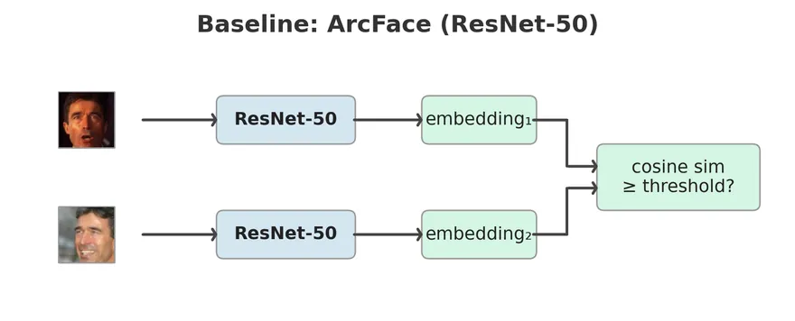
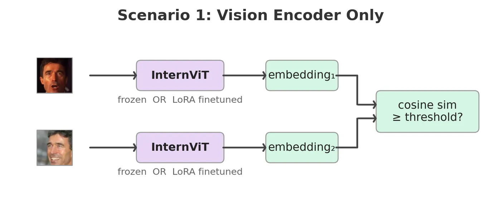
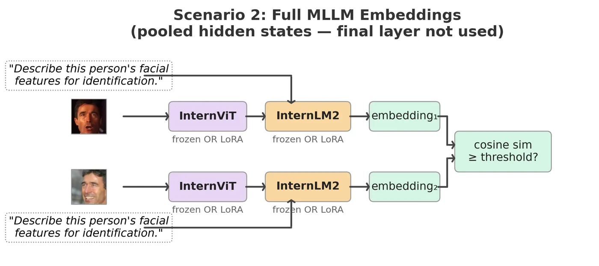
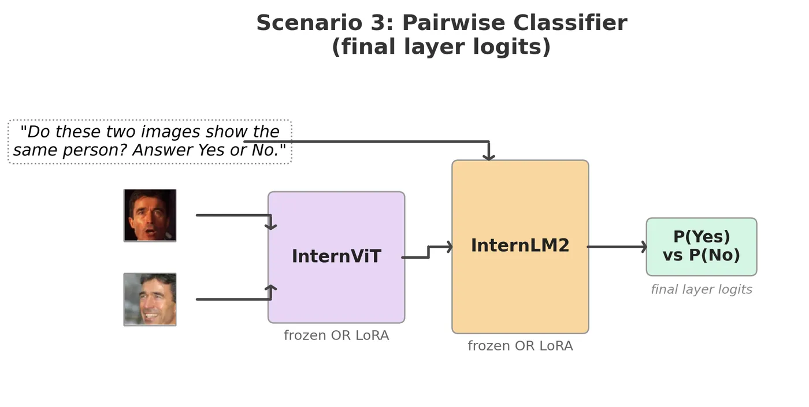

LoRA‑tuning a multimodal LLM for face verification
Comparing a vision‑only encoder, full multimodal embeddings, and pairwise LLM prompting under the same training and evaluation setup.
 |
 |
 |
 |
| Three ways to extract face identity from a 2-billion-parameter multimodal model. None beat a ResNet-50 trained from scratch. | |
Builds on a previous project that established InfoNCE and ArcFace baselines on the same data and evaluation protocol.
Key findings:
- In this setting, multimodal LLMs do not match task-specific encoders for face verification, even after parameter-efficient finetuning.
- The limitation appears to be architectural: despite contrastive finetuning, identity information may be degraded by the multimodal pipeline and is difficult to fully recover from representations pretrained for language modeling.
- Language fusion tends to reduce identity signal: adding the LLM slightly underperforms a vision-only encoder in our experiments.
- CNN baselines remain strong: a ResNet-50 trained from scratch matches or slightly exceeds all 2B-parameter MLLM variants evaluated here.
Results
All models trained on MS1M-ArcFace (85K identities), evaluated with 10-fold cross-validation at FAR@0.001.
| Experiment | Loss | LFW | CFP-FF | CFP-FP |
|---|---|---|---|---|
| InternViT-300M (frozen) | InfoNCE | 66.12% | 54.34% | 51.76% |
| InternViT-300M + LoRA | InfoNCE | 99.02% | 97.60% | 87.07% |
| InternVL2-2B (frozen) | InfoNCE | 60.12% | 53.17% | 50.86% |
| InternVL2-2B + LoRA | InfoNCE | 98.68% | 98.09% | 84.20% |
| InternVL2-2B pairwise (frozen) | Cross-entropy | 50.00% | 50.40% | 50.03% |
| InternVL2-2B pairwise + LoRA | Cross-entropy | 73.03% | 65.77% | 56.56% |
InfoNCE loss
Each batch contains P identity pairs (2 images per identity). InfoNCE maximizes cosine similarity between partners while pushing apart the 2P−2 non-partner images, using temperature-scaled softmax over the similarity matrix. All MLLM experiments in this project use InfoNCE (τ=0.07). The same ResNet-50 baseline trained with ArcFace loss reaches 99.72% LFW / 95.84% CFP-FP — see the ArcFace vs InfoNCE project for an extended comparison of loss functions on the same backbone and data.
Scenario 1: How much face-identity signal is already present in the vision encoder of a pretrained multimodal model, and how far can parameter-efficient finetuning push it for verification?
The ViT was pretrained jointly with the LLM on multimodal data — not faces. Frozen, it scores 66% on LFW (near chance). But rank-8 LoRA adapters on just the FFN layers (fc1, fc2) lift it to 99.02% on LFW and 87.07% on CFP-FP — nearly matching the ResNet-50 baseline (99.55% / 87.87%) — by training only 1.97M parameters (0.64% of the model). The raw signal is weak, but the representation is highly adaptable. Adapters are kept in float32 while the 306M base stays frozen in fp16 — without this, optimizer states for small rank-8 matrices can accumulate rounding errors that may stall training.
Scenario 2: Does the language stack in a multimodal LLM improve identity-discriminative visual representations for face verification?
It dilutes them. InternVL2-2B + LoRA (full MLLM) slightly underperforms InternViT + LoRA (ViT only) — 98.68% vs 99.02% on LFW, 84.20% vs 87.07% on CFP-FP. I think this comes down to two things. First, the pipeline between ViT and LLM is lossy: pixel unshuffle reduces 1,024 visual tokens to 256, and the MLP projector was trained to align visual tokens with language tokens for captioning — not to preserve identity-discriminative spatial information. The ViT alone retains more of what faces need. Second, the LLM’s hidden states are shaped by a next-token prediction objective, not by metric learning — pooling them into a face embedding repurposes a representation that was never designed for pairwise similarity.
Scenario 3: Can the LLM’s internally fused representation of two face images improve verification over independently encoded embeddings and a downstream similarity metric?
No. Prompting the MLLM with two images and “Do these two images show the same person?” is the most natural use of an LLM for verification. It is also the worst. Even with LoRA, it reaches only 73% on LFW and 57% on CFP-FP. Cross-entropy over two tokens (Yes/No) provides a much weaker training signal than InfoNCE over a batch of 2P negatives — the model must simultaneously learn identity similarity and verbalize it through a single token.
The baseline still wins
A ResNet-50 with 7–50× fewer parameters, no pretraining on billions of image-text pairs, and the same InfoNCE loss matches or beats every MLLM configuration. On CFP-FP: 87.87% vs 87.07% for InternViT + LoRA and 84.20% for InternVL2-2B + LoRA.
LoRA configuration
All LoRA experiments use rank 8, α=8 (scaling factor 1.0). Adapters are kept in float32 for numerical stability; the frozen base stays in fp16.
| Model | Total params | LoRA params | Trainable | Adapters | Targets |
|---|---|---|---|---|---|
| InternViT-300M | 305,978,368 | 1,966,080 | 0.64% | 48 | fc1, fc2 (ViT FFN) |
| InternVL2-2B | 2,213,618,688 | 7,864,320 | 0.36% | 120 | fc1, fc2 (ViT FFN) + w1, w2, w3 (LLM FFN) |
Ablation: pooling strategy
For the full MLLM (Scenario 2), the LLM produces a sequence of hidden states. Using the same trained checkpoint, I evaluated three pooling strategies post-hoc — no retraining, just different aggregations:
| Pooling | LFW | CFP-FF | CFP-FP |
|---|---|---|---|
| visual_mean (default) | 98.68% | 98.09% | 84.20% |
| all_mean | 98.67% | 98.14% | 84.40% |
| last_token | 94.20% | 94.97% | 76.73% |
Visual-only and all-sequence pooling perform nearly identically — the prompt tokens contribute little. Last-token drops 4–7 points because the final token’s representation is shaped by next-token prediction, not identity accumulation. Script: sessions/internvl_lora/ablation/run_pooling_ablation.py
Three experimental scenarios
Scenario 1: Vision encoder only
Extract InternViT-300M from InternVL2-2B and use it as a standalone face encoder. Each image passes through the ViT; mean-pooled patch embeddings form a 1024-d face representation, trained with InfoNCE loss.
Scenario 2: Full MLLM embeddings
Feed each image through the complete pipeline: ViT → pixel unshuffle → MLP projector → LLM, with the prompt “Describe this person’s facial features for identification.” The LLM’s visual token hidden states are mean-pooled into a 2048-d embedding, trained with InfoNCE loss.
Scenario 3: Pairwise yes/no classifier
Feed both images into a single forward pass with “Do these two images show the same person? Answer Yes or No.” P(Yes) serves as the verification score, trained with cross-entropy over the Yes/No token IDs.
Each scenario is tested frozen and LoRA-finetuned. Scenarios 1 & 2 use InfoNCE (τ=0.07); Scenario 3 uses cross-entropy. The ResNet-50 + InfoNCE baseline uses the same loss and data.
Architecture
InternVL2-2B (2.1B params)
├── InternViT-300M (304M params, 24 layers)
│ └── LoRA on fc1, fc2 (FFN layers, rank 8)
├── Pixel unshuffle (1024 → 256 visual tokens)
├── MLP projector (12.6M params, frozen)
│ └── LayerNorm → Linear → GELU → Linear
└── InternLM2-1.8B (1.8B params, 24 layers)
└── LoRA on w1, w2, w3 (gate/up/down projections, rank 8)
Data flow: 112×112 face → resize to 448×448 → ImageNet normalization → ViT (1024 patch tokens) → pixel unshuffle (256 tokens) → MLP projector → LLM → pool hidden states → L2-normalized embedding.
LoRA details: Rank-8 adapters on ViT FFN layers (fc1, fc2) and LLM FFN layers (w1/gate, w2/up, w3/down). Adapters use float32; the 2.2B frozen base stays in fp16. With α=8 and r=8, scaling is 1.0 — adapter output adds directly to the frozen base. Total trainable: 1.97M for ViT-only (0.64%), 7.86M for ViT+LLM (0.36%).
Gradient checkpointing note: Enabled with use_reentrant=False. The upstream InternVL2 code uses use_reentrant=True, which silently drops gradients for LoRA adapters because frozen base weights have requires_grad=False.
Training
Trained on multi-node GPU clusters: 2 nodes × 4 H100s and 4 nodes × 4 A100s. Training data and checkpoints are copied to $SLURM_TMPDIR on each node to avoid network filesystem bottlenecks.
Scenario 1 (ViT only): SGD (lr=10⁻³, momentum=0.9, WD=5×10⁻&sup4;) with cosine annealing and 5-epoch warmup, batch size 200, 15 epochs. Scenarios 2 & 3 (full MLLM): AdamW (lr=2×10⁻&sup4;, WD=0.01) with cosine annealing and 2-epoch warmup, gradient accumulation over 8–16 steps for effective batch sizes of 256, 10 epochs. bf16 mixed precision throughout, except LoRA adapters in float32.
Identity-aware pair sampling follows CLIP’s strategy: each batch contains P identity pairs (2 images per identity), InfoNCE treats the 2P−2 non-partner images as negatives. A round-robin sampler cycles through identities to maximize data coverage despite the pair constraint. For Scenario 3, a separate PairDataset generates 50/50 positive/negative pairs, resampled each epoch.
Open questions
Unfreeze the projector? The MLP projector is frozen in all experiments. Finetuning it might let it learn to preserve identity-discriminative features during the visual-to-language mapping.
ArcFace loss instead of InfoNCE? All MLLM experiments use InfoNCE. The previous project shows ArcFace outperforms InfoNCE by 8 points on CFP-FP for the same backbone. Applying ArcFace loss to the MLLM embeddings would test whether the supervision gap explains the remaining distance.
Larger LoRA rank or attention targets? All experiments use rank 8 on FFN layers only. Increasing rank or targeting Q, K, V projections may help.
I invite you to pick up where this leaves off. If you have ideas or want to build on this, please reach out.
Experimental setting
- Training data: MS1M-ArcFace, 85,742 identities, 80/20 train/val split per identity
- Hardware: 2 nodes × 4 H100s / 4 nodes × 4 A100s
- Evaluation: LFW, CFP-FF, CFP-FP — 10-fold cross-validation at FAR@0.001
- LoRA: rank 8, α=8, targets
fc1/fc2(ViT FFN) andw1/w2/w3(LLM FFN) - Scenario 1: InfoNCE loss, τ=0.07, SGD (lr=10⁻³, momentum=0.9, WD=5×10⁻&sup4;), batch size 200, 15 epochs, bf16
- Scenario 2: InfoNCE loss, τ=0.07, AdamW (lr=2×10⁻&sup4;, WD=0.01), gradient accumulation 8 steps, 10 epochs, bf16
- Scenario 3: Cross-entropy on Yes/No token IDs, AdamW (lr=2×10⁻&sup4;, WD=0.01), gradient accumulation 16 steps, 10 epochs, bf16
- Baseline: ResNet-50 + InfoNCE, SGD (lr=0.1, momentum=0.9, WD=5×10⁻&sup4;), 30 epochs
All results reproducible via config files in configs/.
Setup & Usage
Setup
conda env create -f environment.yaml
conda activate face-verification
cp .env.example .env # fill in dataset paths + HPC credentialsData
- MS1M-ArcFace (training): Download from Kaggle. Set
MS1M_DIRin.env. LMDBs are built automatically on first run. - LFW (eval): Auto-downloaded and cached on first eval.
- CFP (eval): Download from Kaggle to
data/cfp-dataset/.
Model weights
python scripts/download_internvl.py # downloads InternVL2-2B (~4.4 GB)Training
# Scenario 1: ViT encoder + LoRA
accelerate launch train.py --config internvit-lora
# Scenario 2: Full MLLM siamese + LoRA
accelerate launch train.py --config internvl-lora
# Scenario 3: Pairwise classifier + LoRA
accelerate launch train_pairwise.py --config internvl-pair-loraEvaluation
python eval_checkpoint.py --config internvit-loraEvaluates on LFW and CFP-FF/FP with 10-fold cross-validation at FAR@0.001.
SLURM cluster
cd hpc && bash _download_models.sh && cd .. # pre-download weights (login node)
bash hpc/internvit-lora.sh # submit Scenario 1
bash hpc/internvl-lora.sh # submit Scenario 2
bash hpc/internvl-pair-lora.sh # submit Scenario 3Project structure
train.py # Scenario 1 & 2 training (embedding-based)
train_pairwise.py # Scenario 3 training (pairwise classifier)
eval_checkpoint.py # Standalone evaluation
configs/ # YAML configs per experiment
src/
backbones/ # InternViT, InternVL, InternVL-Pair, LoRA
data/ # LMDB dataset, pair sampler, MS1M preparation
eval/ # LFW/CFP evaluation with 10-fold CV
losses/ # InfoNCE loss
training.py # Shared training scaffold (multi-node, checkpointing)
utils.py # LR scheduling, checkpointing, config overrides
hpc/ # SLURM job scripts (self-submitting)
scripts/ # Model download, diagram generation, analysis
tests/ # Unit tests
Acknowledgments
This research was enabled in part by support provided by the Digital Research Alliance of Canada (alliancecan.ca).